import pandas as pd
import numpy as np
import matplotlib.pyplot as plt
%matplotlib inline17 Regression: Mutual Fund Analysis
In this chapter, we will use the skills that we have learned so far to analyze some mutual fund data. In particular, we have end of day NAVs from two different funds, called fund_1 and fund_2, as well as benchmark index, called benchmark. The data spans from 2016Q1 to 2019Q3.
In our analysis we will do the following:
- Calculate daily price returns for the benchmark and each of the two funds (ignoring dividends)
- Calculate a rolling 250-day return for each fund and the benchmark, visualize the results.
- Calculate a rolling 250-day volatility for each fund and the benchmark, visualize the results.
- For each calendar quarter in the data set, calculate the excess return for each fund (vs the benchmark) and visualize this.
- Create a correlation matrix of the three return histories (funds & benchmark) using daily returns of the 2 most recent years.
- Regress each of the two funds vs the benchmark and calculate beta, alpha, and \(R^2\) using the most recent 2 years of data.
- Visualize the two sets of linear regression results.
17.1 Loading Packages
Let’s begin by importing the packages that we will need.
17.2 Reading-In Data
Next, we’ll read-in the data, rename the columns, and convert the trade_date column to datetime.
# reading-in data
df_px_raw = pd.read_csv('mutual_fund_data.csv')
# renaming columns
df_px_raw.rename(
columns={'Date':'trade_date', 'BM':'benchmark', 'Fund_1':'fund_1', 'Fund_2':'fund_2'}
, inplace=True)
# converting data-type of trade_date
df_px_raw['trade_date'] = pd.to_datetime(df_px_raw['trade_date'])
df_px_raw.head()| trade_date | benchmark | fund_1 | fund_2 | |
|---|---|---|---|---|
| 0 | 2015-12-31 | 203.8700 | 108.29 | 254.04 |
| 1 | 2016-01-01 | 203.8700 | 108.29 | 254.04 |
| 2 | 2016-01-04 | 201.0192 | 106.61 | 250.82 |
| 3 | 2016-01-05 | 201.3600 | 106.10 | 250.90 |
| 4 | 2016-01-06 | 198.8200 | 104.66 | 247.36 |
17.3 Visualizing Raw Price Data
The pandas package was created by Wes McKinney when he was a quant at the hedge fund AQR. Because of this, pandas was built with a lot of functionality that is particularly useful for working with financial timeseries. This includes some rudimentary plotting functionality, which is built on top of the package matplotlib.
Let’s quickly plot the price series for our three funds using the DataFrame.plot() method.
df_px_raw.plot(
x='trade_date',
y=['benchmark', 'fund_1', 'fund_2'],
figsize=(8,5),
title='Daily Fund Prices: 2016Q1-2019Q3',
grid = True
);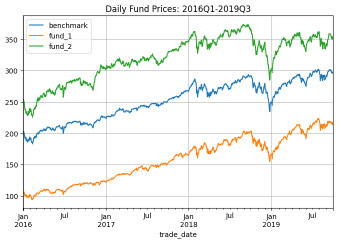
Code Challenge: Copy and paste the code above and try setting subplots=True.
Solution
df_px_raw.plot(
x='trade_date',
y=['benchmark', 'fund_1', 'fund_2'],
figsize=(8,8),
title='Fund Prices: 2016Q1-2019Q3',
grid = True,
subplots = True,
);
plt.subplots_adjust(top=0.94);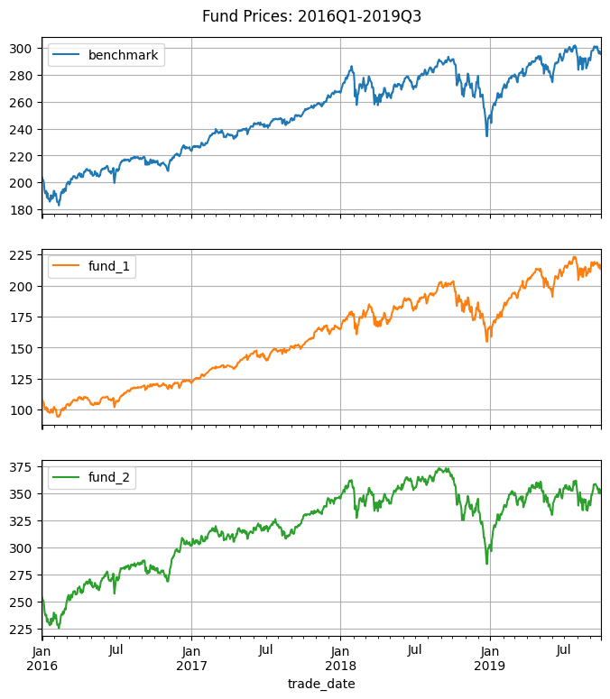
17.4 Tidying the Data
Our data, in its current form, is not tidy. In order for data to be tidy, each row should be a single observation. Currently, each row of df_px_raw is three price observations - one for each of the three funds - which will not allow for easy use of the .groupby() function.
We can use the pandas.melt() method to tidy our data.
df_px = \
pd.melt(
df_px_raw,
id_vars = ['trade_date'],
value_vars = ['benchmark', 'fund_1', 'fund_2'],
var_name = 'symbol',
value_name = 'close',
)
df_px.head()| trade_date | symbol | close | |
|---|---|---|---|
| 0 | 2015-12-31 | benchmark | 203.8700 |
| 1 | 2016-01-01 | benchmark | 203.8700 |
| 2 | 2016-01-04 | benchmark | 201.0192 |
| 3 | 2016-01-05 | benchmark | 201.3600 |
| 4 | 2016-01-06 | benchmark | 198.8200 |
Our analysis will involve calculating quarterly statistics, so let’s add columns year, quarter, and month.
df_px['year'] = df_px['trade_date'].dt.year
df_px['quarter'] = df_px['trade_date'].dt.quarter
df_px['month'] = df_px['trade_date'].dt.month
df_px.head()| trade_date | symbol | close | year | quarter | month | |
|---|---|---|---|---|---|---|
| 0 | 2015-12-31 | benchmark | 203.8700 | 2015 | 4 | 12 |
| 1 | 2016-01-01 | benchmark | 203.8700 | 2016 | 1 | 1 |
| 2 | 2016-01-04 | benchmark | 201.0192 | 2016 | 1 | 1 |
| 3 | 2016-01-05 | benchmark | 201.3600 | 2016 | 1 | 1 |
| 4 | 2016-01-06 | benchmark | 198.8200 | 2016 | 1 | 1 |
Let’s also rearrange columns to make our table a little more human readable.
df_px = df_px[['symbol','trade_date', 'year', 'quarter', 'month', 'close',]]
df_px.head()| symbol | trade_date | year | quarter | month | close | |
|---|---|---|---|---|---|---|
| 0 | benchmark | 2015-12-31 | 2015 | 4 | 12 | 203.8700 |
| 1 | benchmark | 2016-01-01 | 2016 | 1 | 1 | 203.8700 |
| 2 | benchmark | 2016-01-04 | 2016 | 1 | 1 | 201.0192 |
| 3 | benchmark | 2016-01-05 | 2016 | 1 | 1 | 201.3600 |
| 4 | benchmark | 2016-01-06 | 2016 | 1 | 1 | 198.8200 |
17.5 Visualizing the Tidy Price Data with seaborn
Let’s now import the seaborn package, which a popular visualization package that is also built on top of matplotlib.
import seaborn as sns
sns.set()In the code below, we use sns.relplot() to graph the three fund price series using our data in its tidy form. Notice that by setting hue='symbol', the sns.relplot() function knows to graph the close prices for each of the three symbols separately and with three different colors.
g = \
sns.relplot(
data = df_px, kind = 'line',
x = 'trade_date', y = 'close', hue = 'symbol',
aspect = 1.5,
);
# creating and tweaking the title
g.fig.suptitle('Daily Fund Close Prices: 2016Q1-2019Q3')
plt.subplots_adjust(top=0.93);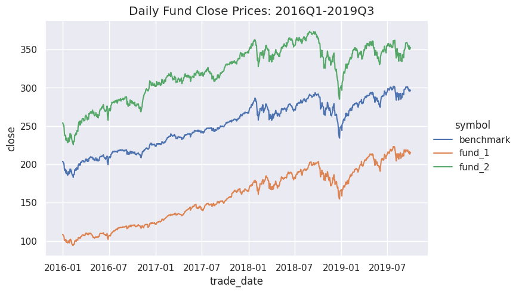
17.6 Calculating Daily Returns (#1)
Notice that our data does not contain daily returns.
df_px.head()| symbol | trade_date | year | quarter | month | close | |
|---|---|---|---|---|---|---|
| 0 | benchmark | 2015-12-31 | 2015 | 4 | 12 | 203.8700 |
| 1 | benchmark | 2016-01-01 | 2016 | 1 | 1 | 203.8700 |
| 2 | benchmark | 2016-01-04 | 2016 | 1 | 1 | 201.0192 |
| 3 | benchmark | 2016-01-05 | 2016 | 1 | 1 | 201.3600 |
| 4 | benchmark | 2016-01-06 | 2016 | 1 | 1 | 198.8200 |
Now that our data is tidy, we can easily obtain daily log-returns using a grouped calculation.
We use log-returns because, they are very close in value to simple returns, and multi-day log-returns are easily calculated as sums of single-day returns.
df_px['daily_ret'] = \
np.log(df_px['close']).groupby(df_px['symbol']).diff() #log returns
df_px.head()| symbol | trade_date | year | quarter | month | close | daily_ret | |
|---|---|---|---|---|---|---|---|
| 0 | benchmark | 2015-12-31 | 2015 | 4 | 12 | 203.8700 | NaN |
| 1 | benchmark | 2016-01-01 | 2016 | 1 | 1 | 203.8700 | 0.000000 |
| 2 | benchmark | 2016-01-04 | 2016 | 1 | 1 | 201.0192 | -0.014082 |
| 3 | benchmark | 2016-01-05 | 2016 | 1 | 1 | 201.3600 | 0.001694 |
| 4 | benchmark | 2016-01-06 | 2016 | 1 | 1 | 198.8200 | -0.012694 |
Code Challenge: Verify that all the log-returns on the first date in the data set are NaN.
Solution
df_px[df_px['trade_date'] == np.min(df_px['trade_date'])]| symbol | trade_date | year | quarter | month | close | daily_ret | |
|---|---|---|---|---|---|---|---|
| 0 | benchmark | 2015-12-31 | 2015 | 4 | 12 | 203.87 | NaN |
| 978 | fund_1 | 2015-12-31 | 2015 | 4 | 12 | 108.29 | NaN |
| 1956 | fund_2 | 2015-12-31 | 2015 | 4 | 12 | 254.04 | NaN |
17.7 Rolling 252-day Return (#2)
Now that we have daily log-returns, we can easily calculate a rolling 252-day return by using the .rolling() method.
df_px['ret_252'] = \
df_px['daily_ret'].groupby(df_px['symbol']).rolling(252).sum().values
df_px.head()| symbol | trade_date | year | quarter | month | close | daily_ret | ret_252 | |
|---|---|---|---|---|---|---|---|---|
| 0 | benchmark | 2015-12-31 | 2015 | 4 | 12 | 203.8700 | NaN | NaN |
| 1 | benchmark | 2016-01-01 | 2016 | 1 | 1 | 203.8700 | 0.000000 | NaN |
| 2 | benchmark | 2016-01-04 | 2016 | 1 | 1 | 201.0192 | -0.014082 | NaN |
| 3 | benchmark | 2016-01-05 | 2016 | 1 | 1 | 201.3600 | 0.001694 | NaN |
| 4 | benchmark | 2016-01-06 | 2016 | 1 | 1 | 198.8200 | -0.012694 | NaN |
Next we’ll use sns.FacetGrid() to graph three separate subplots of the rolling returns.
g = sns.FacetGrid(df_px, col='symbol', aspect=1.25, height=3,)
g.map(plt.plot, 'trade_date', 'ret_252', alpha=0.7,)
g.add_legend();
g.set_xticklabels(rotation=35, horizontalalignment='right');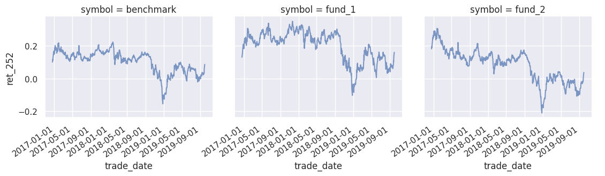
Code Challenge: Copy and paste the code above, and try changing col='symbol' to row='symbol'.
Solution
g = sns.FacetGrid(df_px, row='symbol', aspect=1.25, height=3)
g.map(plt.plot, 'trade_date', 'ret_252', alpha=0.7, )
g.add_legend();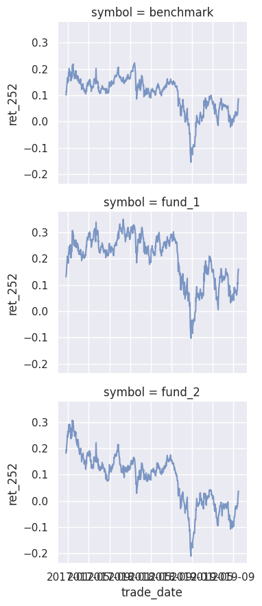
17.8 Rolling 252-day Volatility (#3)
We can calculate a rolling 252-day volatility in a similar fashion as the rolling returns.
df_px['vol_252'] = \
df_px['daily_ret'].groupby(df_px['symbol']).rolling(252).std().values * np.sqrt(252)
df_px.head()| symbol | trade_date | year | quarter | month | close | daily_ret | ret_252 | vol_252 | |
|---|---|---|---|---|---|---|---|---|---|
| 0 | benchmark | 2015-12-31 | 2015 | 4 | 12 | 203.8700 | NaN | NaN | NaN |
| 1 | benchmark | 2016-01-01 | 2016 | 1 | 1 | 203.8700 | 0.000000 | NaN | NaN |
| 2 | benchmark | 2016-01-04 | 2016 | 1 | 1 | 201.0192 | -0.014082 | NaN | NaN |
| 3 | benchmark | 2016-01-05 | 2016 | 1 | 1 | 201.3600 | 0.001694 | NaN | NaN |
| 4 | benchmark | 2016-01-06 | 2016 | 1 | 1 | 198.8200 | -0.012694 | NaN | NaN |
This code creates a seaborn.FacetGrid() of the rolling volatilities.
g = sns.FacetGrid(df_px, col='symbol', aspect=1.25, height=3,)
g.map(plt.plot, 'trade_date', 'vol_252', alpha=0.7)
g.set_xticklabels(rotation=35, horizontalalignment='right');
g.add_legend();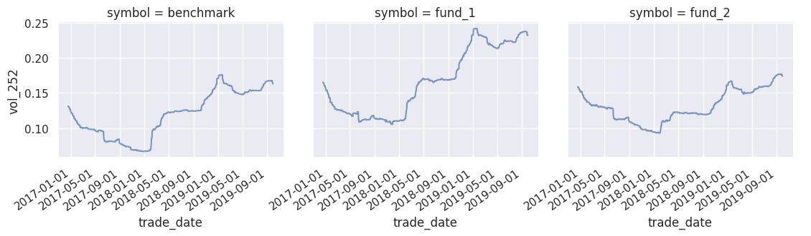
The following code uses pandas to graph the rolling returns and volatility on the same plot for fund_1.
# filtering conditions
bln_symbol = df_px['symbol'] == 'fund_1'
bln_nans = ~(np.isnan(df_px['ret_252']))
bln_filter = bln_symbol & bln_nans
# graphing
df_px[bln_filter].plot(x='trade_date', y=['ret_252', 'vol_252']);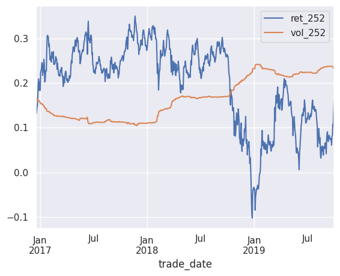
Code Challenge Copy and paste the above code and modify it to graph only the data from the beginning of 2019 and onwards.
Solution
bln_symbol = df_px['symbol'] == 'fund_1'
bln_date = df_px['trade_date'] >= '2019-01-01'
bln_filter = bln_symbol & bln_date
df_px[bln_filter].plot(x='trade_date', y=['ret_252', 'vol_252']);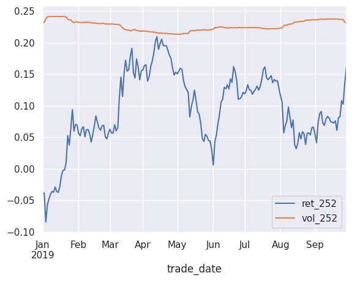
17.9 Quarterly Returns and Excess Return (#4)
Our next analysis objective is to calculate quarterly excess returns for fund_1 and fund_2 relative the benchmark.
As we can see, df_px consist of daily data.
df_px.head()| symbol | trade_date | year | quarter | month | close | daily_ret | ret_252 | vol_252 | |
|---|---|---|---|---|---|---|---|---|---|
| 0 | benchmark | 2015-12-31 | 2015 | 4 | 12 | 203.8700 | NaN | NaN | NaN |
| 1 | benchmark | 2016-01-01 | 2016 | 1 | 1 | 203.8700 | 0.000000 | NaN | NaN |
| 2 | benchmark | 2016-01-04 | 2016 | 1 | 1 | 201.0192 | -0.014082 | NaN | NaN |
| 3 | benchmark | 2016-01-05 | 2016 | 1 | 1 | 201.3600 | 0.001694 | NaN | NaN |
| 4 | benchmark | 2016-01-06 | 2016 | 1 | 1 | 198.8200 | -0.012694 | NaN | NaN |
Calculating the quarterly returns is a straight-forward application of .groupby().agg().
df_quarter = \
df_px[df_px.year > 2015] \
.groupby(['symbol', 'year', 'quarter'])['daily_ret'].agg([np.sum]).reset_index() \
.rename(columns={'sum':'quarterly_ret'})
df_quarter.head()| symbol | year | quarter | quarterly_ret | |
|---|---|---|---|---|
| 0 | benchmark | 2016 | 1 | 0.008061 |
| 1 | benchmark | 2016 | 2 | 0.019061 |
| 2 | benchmark | 2016 | 3 | 0.032062 |
| 3 | benchmark | 2016 | 4 | 0.032879 |
| 4 | benchmark | 2017 | 1 | 0.053184 |
Since we ultimately want to calculate excess return relative to the benchmark, it would be helpful to have the benchmark returns as a separate column in df_quarter.
In order to do this, let’s first separate out the benchmark quarterly returns into a separate DataFrame called df_bench.
df_bench = \
df_quarter[df_quarter['symbol'] == 'benchmark'] \
[['year', 'quarter', 'quarterly_ret']] \
.rename(columns={'quarterly_ret':'bench_ret'})
df_bench.head()| year | quarter | bench_ret | |
|---|---|---|---|
| 0 | 2016 | 1 | 0.008061 |
| 1 | 2016 | 2 | 0.019061 |
| 2 | 2016 | 3 | 0.032062 |
| 3 | 2016 | 4 | 0.032879 |
| 4 | 2017 | 1 | 0.053184 |
In order to add the bench_ret column to df_quarter we will utilize a left-join.
df_excess = \
pd.merge(
df_quarter, df_bench, how='left',
left_on=['year','quarter'], right_on=['year', 'quarter']
)
df_excess.head()| symbol | year | quarter | quarterly_ret | bench_ret | |
|---|---|---|---|---|---|
| 0 | benchmark | 2016 | 1 | 0.008061 | 0.008061 |
| 1 | benchmark | 2016 | 2 | 0.019061 | 0.019061 |
| 2 | benchmark | 2016 | 3 | 0.032062 | 0.032062 |
| 3 | benchmark | 2016 | 4 | 0.032879 | 0.032879 |
| 4 | benchmark | 2017 | 1 | 0.053184 | 0.053184 |
Finally, we can caluclate excess return for each of the funds.
df_excess['excess_ret'] = df_excess['quarterly_ret'] - df_excess['bench_ret']
df_excess['year_quarter'] = df_excess['year'] * 100 + df_excess['quarter']
df_excess = df_excess[['symbol', 'year', 'quarter', 'year_quarter', 'quarterly_ret', 'bench_ret', 'excess_ret']]
df_excess.head()| symbol | year | quarter | year_quarter | quarterly_ret | bench_ret | excess_ret | |
|---|---|---|---|---|---|---|---|
| 0 | benchmark | 2016 | 1 | 201601 | 0.008061 | 0.008061 | 0.0 |
| 1 | benchmark | 2016 | 2 | 201602 | 0.019061 | 0.019061 | 0.0 |
| 2 | benchmark | 2016 | 3 | 201603 | 0.032062 | 0.032062 | 0.0 |
| 3 | benchmark | 2016 | 4 | 201604 | 0.032879 | 0.032879 | 0.0 |
| 4 | benchmark | 2017 | 1 | 201701 | 0.053184 | 0.053184 | 0.0 |
Next, we create a bar-plot with of the three funds quarterly returns.
g = \
sns.catplot(
data=df_excess, x="year_quarter", y="quarterly_ret",
hue="symbol", kind="bar",
aspect= 1.65,
)
g.fig.suptitle('Fund Quarterly Returns')
g.set_xticklabels(rotation=35, horizontalalignment='right')
plt.subplots_adjust(top=0.93);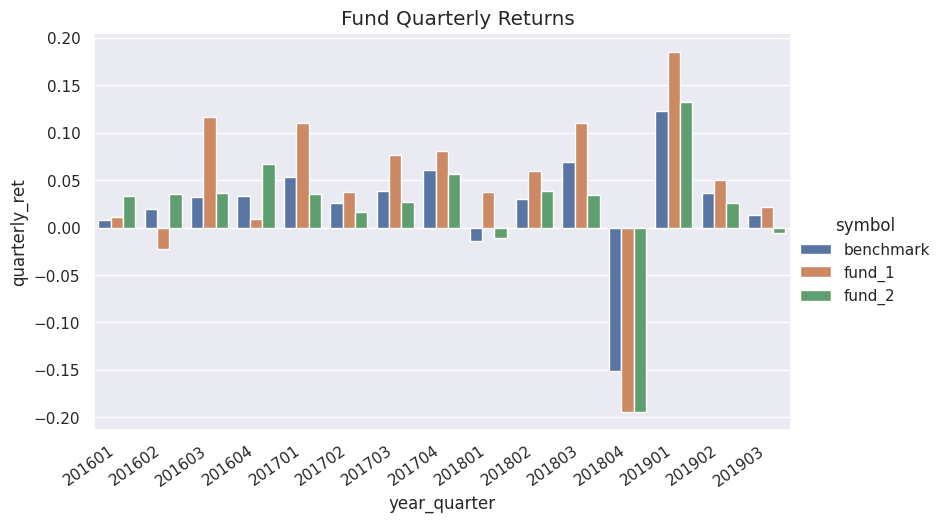
And finally, we create a bar-plot of the excess returns of fund_1 and fund_2.
g = \
sns.catplot(
data=df_excess[df_excess.symbol != 'benchmark'],
x="year_quarter", y="excess_ret",
hue="symbol", kind="bar",
aspect=1.5
);
g.fig.suptitle('Quarterly Excess Returns: fund_1 & fund_2')
g.set_xticklabels(rotation=35, horizontalalignment='right')
plt.subplots_adjust(top=0.93);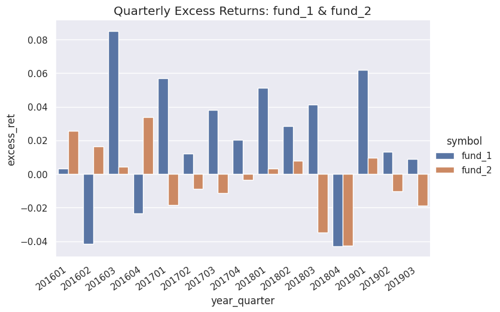
17.10 Wrangling Returns Data
For the remainder of the tutorial, will be helpful to have an untidy DataFrame with the daily returns for the three funds in separate columns.
Let’s first separate out the returns for each fund into their own DataFrames.
cols = ['trade_date', 'daily_ret']
df_bench = \
df_px[df_px.symbol == 'benchmark'][cols].copy().rename(columns={'daily_ret':'benchmark'})
df_fund1 = \
df_px[df_px.symbol == 'fund_1'][cols].copy().rename(columns={'daily_ret':'fund_1'})
df_fund2 = \
df_px[df_px.symbol == 'fund_2'][cols].copy().rename(columns={'daily_ret':'fund_2'})Next, we left-join these three DataFrames together into a single variable called df_ret.
df_ret = \
df_bench \
.merge(right=df_fund1, how='left', left_on='trade_date', right_on='trade_date') \
.merge(right=df_fund2, how='left', left_on='trade_date', right_on='trade_date') \
.query('trade_date > "2015-12-31"')
df_ret.head()| trade_date | benchmark | fund_1 | fund_2 | |
|---|---|---|---|---|
| 1 | 2016-01-01 | 0.000000 | 0.000000 | 0.000000 |
| 2 | 2016-01-04 | -0.014082 | -0.015635 | -0.012756 |
| 3 | 2016-01-05 | 0.001694 | -0.004795 | 0.000319 |
| 4 | 2016-01-06 | -0.012694 | -0.013665 | -0.014210 |
| 5 | 2016-01-07 | -0.024284 | -0.032729 | -0.025882 |
17.11 Pair-Plots and Correlation Matrix (#5)
In a subsequent section, we will perform regressions on the two most recent years of data.
Prior to modeling, I find it useful to look at scatter plots and correlations.
As a first step, let’s programmatically calculate the start date for our analysis. We will utilize the numpy.timedelta data structure for this purpose.
dt_curr = df_ret.sort_values(['trade_date'])[-1:]['trade_date'].values[0]
dt_start = dt_curr - np.timedelta64(730, 'D')
print(dt_curr)
print(dt_start)2019-09-30T00:00:00.000000000
2017-09-30T00:00:00.000000000Next, we use the seaborn.pairplot() function to quickly graph all the pairwise correlatior for two years of fund data.
cols = ['benchmark', 'fund_1', 'fund_2']
sns.pairplot(
df_ret[df_ret['trade_date'] > dt_start][cols]
);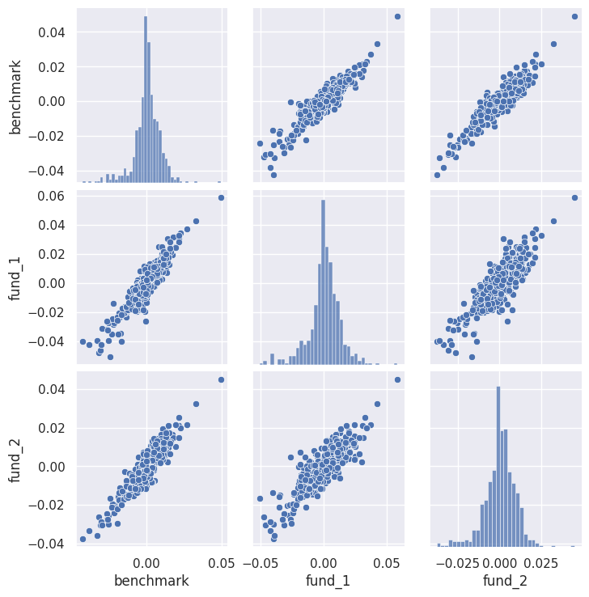
Clearly all three of our returns are highly correlated.
Let’s use the DataFrame.corr() method to calculate the correlations explicitly.
cols = ['benchmark', 'fund_1', 'fund_2']
df_ret[df_ret['trade_date'] > dt_start][cols].corr()| benchmark | fund_1 | fund_2 | |
|---|---|---|---|
| benchmark | 1.000000 | 0.927068 | 0.919859 |
| fund_1 | 0.927068 | 1.000000 | 0.836144 |
| fund_2 | 0.919859 | 0.836144 | 1.000000 |
Code Challenge: Copy and paste the above correlation code and modify it calculate the correlations for the entirety of the data set.
Solution
cols = ['benchmark', 'fund_1', 'fund_2']
df_ret[cols].corr()| benchmark | fund_1 | fund_2 | |
|---|---|---|---|
| benchmark | 1.000000 | 0.914292 | 0.914148 |
| fund_1 | 0.914292 | 1.000000 | 0.812403 |
| fund_2 | 0.914148 | 0.812403 | 1.000000 |
17.12 Regression of Funds against Benchmark (#6 and #7)
Finally, we will fit regressions of fund_1 and fund_2 against the benchmark.
In order to do this, we will utilize the sklearn package which is extremely useful for implementing a variety of machine learning techniques.
Let’s begin by importing the LinearRegression() constructor function from sklearn.
from sklearn.linear_model import LinearRegressionWe again want to restrict our analysis to the most recent two years, so let’s recalculate dt_start just for good measure.
dt_curr = df_ret.sort_values(['trade_date'])[-1:]['trade_date'].values[0]
dt_start = dt_curr - np.timedelta64(730, 'D')17.12.1 Fund 1
Let’s begin by regressing fund_1 against the benchmark.
As a preliminary step, let’s graph the scatter plot of the returns series.
df_ret \
[df_ret.trade_date > dt_start] \
.plot.scatter('benchmark', 'fund_1', c='k', figsize=(6, 4));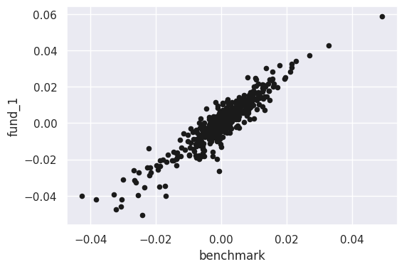
The first step in using sklearn for a regression analysis is to instantiate a regression model object as assign it to a variable, which we will call reg_fund1.
reg_fund1 = LinearRegression(fit_intercept=True)Next, let’s separate out the benchmark returns and the fund_1 returns into their own DataFrames.
df_bm = df_ret[['benchmark']][df_ret.trade_date > dt_start]
df_fund1 = df_ret[['fund_1']][df_ret.trade_date > dt_start]To fit the regression we call the .fit() method of our model object reg_fund1.
reg_fund1.fit(X = df_bm, y = df_fund1)LinearRegression()In a Jupyter environment, please rerun this cell to show the HTML representation or trust the notebook.
On GitHub, the HTML representation is unable to render, please try loading this page with nbviewer.org.
LinearRegression()
The coefficients \((\beta)\) and the y-intercept \((\alpha)\) are attributes of reg_fund1 which we can access as follows:
print("beta: " + str(np.round(reg_fund1.coef_[0, 0], 4)))
print("alpha: " + str(np.round(reg_fund1.intercept_[0], 4)))beta: 1.2982
alpha: 0.0003Every class of machine learning model has a .score() method, which gives some kind of accuracy measure. For LinearRegression the .score() gives the \(R^2\).
reg_fund1.score(df_ret[['benchmark']], df_ret[['fund_1']])0.8349465372078845Let’s use pandas plotting along with matplotlib.pyplot to graph our regression line along with the scatter plot of the data:
xfit = np.linspace(-0.05, 0.05, 100) # range of line
yfit = reg_fund1.predict(xfit[:, np.newaxis]) # model values in range
df_ret \
[df_ret.trade_date > dt_start] \
.plot.scatter('benchmark', 'fund_1', c='k', figsize=(6, 4));
plt.plot(xfit, yfit);/home/pritam/.local/lib/python3.10/site-packages/sklearn/base.py:439: UserWarning: X does not have valid feature names, but LinearRegression was fitted with feature names
warnings.warn(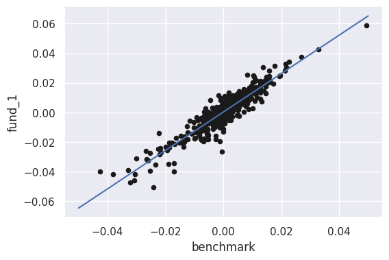
17.12.2 Fund 2
Let’s implement the same kind of regression analysis for fund_2.
Scatter Plot of fund_2 vs benchmark
df_ret\
[df_ret.trade_date > dt_start]\
.plot.scatter('benchmark', 'fund_2', c='k', figsize=(6, 4));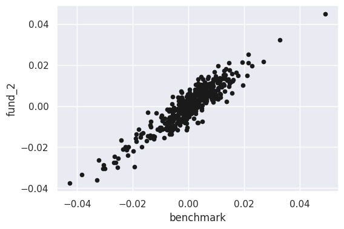
Instantiate a LinearRegression Object
reg_fund2 = LinearRegression(fit_intercept=True)Separate out Features and Labels for Regression Analysis
df_bm = df_ret[['benchmark']][df_ret.trade_date > dt_start]
df_fund2 = df_ret[['fund_2']][df_ret.trade_date > dt_start]Fit the Regression Model
reg_fund2.fit(X = df_bm, y = df_fund2)LinearRegression()In a Jupyter environment, please rerun this cell to show the HTML representation or trust the notebook.
On GitHub, the HTML representation is unable to render, please try loading this page with nbviewer.org.
LinearRegression()
Print Coefficients
print(reg_fund2.coef_)
print(reg_fund2.intercept_)[[0.94373491]]
[-0.00015386]Check the \(R^2\)
reg_fund2.score(df_ret[['benchmark']], df_ret[['fund_1']])0.7823936517887883Plot the Fitted Regression Line
xfit = np.linspace(-0.05, 0.05, 100) # range of line
yfit = reg_fund2.predict(xfit[:, np.newaxis]) # model values in range
df_ret \
[df_ret.trade_date > dt_start] \
.plot.scatter('benchmark', 'fund_2', c='k', figsize=(6, 4));
plt.plot(xfit, yfit);/home/pritam/.local/lib/python3.10/site-packages/sklearn/base.py:439: UserWarning: X does not have valid feature names, but LinearRegression was fitted with feature names
warnings.warn(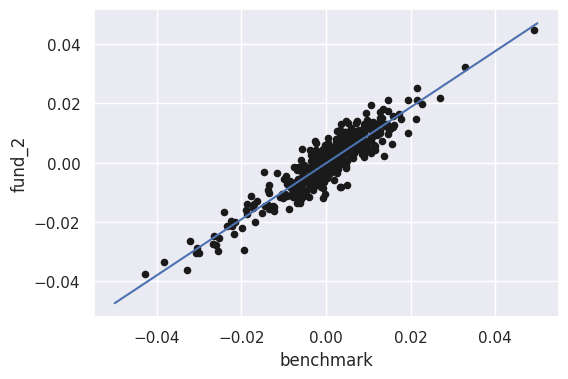